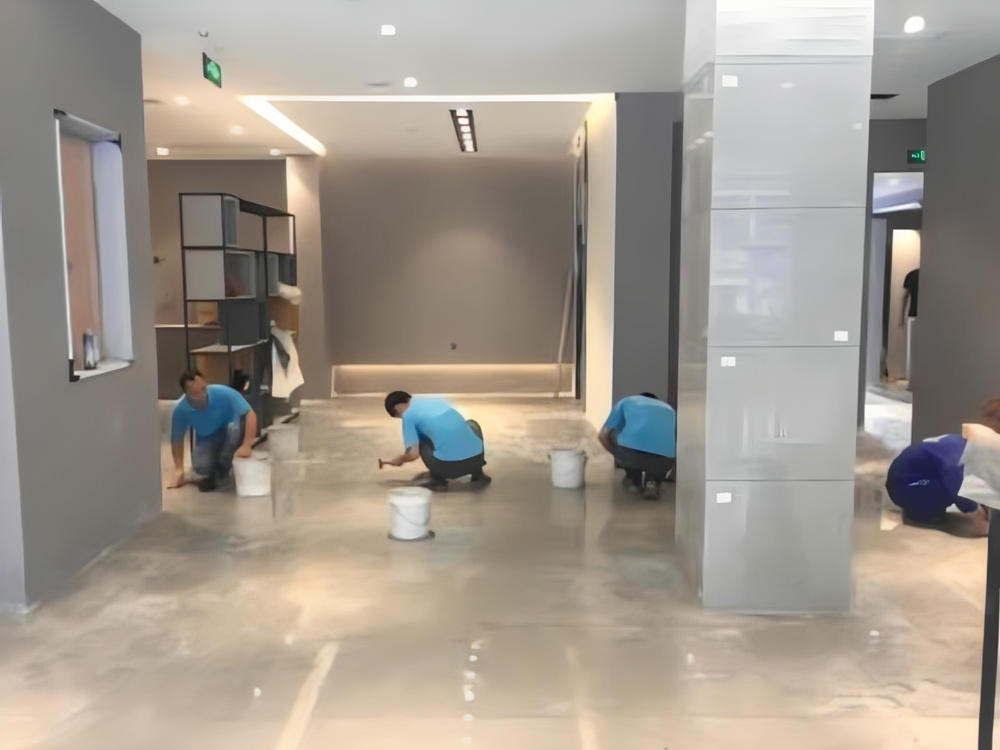
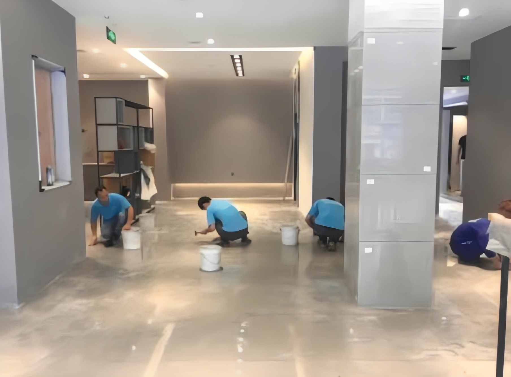

开荒保洁
装修好以后，室内就是留下很多的垃圾，这样时候只好对它进行清洁，才能让人们住起来比较舒服，但是很多对于开荒保洁是啥意思。下面小编就来给大家介绍一下什么是开荒保洁。
开荒保洁说得简单一点就是对刚装修好的新房进行第一次保洁，有的地方把它说成装修后保洁。房屋装修或粉刷后，我们知道这个时候的地面和墙砖都是会留下比较的建筑和装修垃圾的。比如说有：水泥块、油漆点(涂料点)、玻璃胶等等，而且橱柜里外都会有一层很厚的灰尘，会布满一层灰尘，玻璃上会有许多涂料点、水泥块儿等装修垃圾。
开荒保洁注意事项有哪些
-
1、 不能直接用水冲洗地面：开荒保洁时，比如说发现地面上留下很多的建筑垃圾要将它清理干净，如果你是直接使用水冲洗，这样做容易让地板造成影响，而且还有可能会让垃圾随水流到地漏中，严重就会造成堵塞现象。
-
2、频繁使用钢丝球：钢丝球虽然它的去污能力强，特别像一些附着物，但是要知道如果你使用了钢丝球上的铁丝也容易让物件的表层破坏，造成物件表面被刮花现象发生，在我们日常生活的清洁中也是要合理的使用钢丝球。
-
3、 注意是否使用草酸：草酸我们知道它是一种有刺鼻气味的弱酸，但是要知道它的去污能力超强，就是对金属容易造成腐蚀和损坏。一些工人在清洁过程喜欢使用它，但是要知道使用它以后有可能让金属制品慢慢失去光泽。
-
4、 检查玻璃擦：很多时候清洁工人有可能在上一家没有用的工具就带去下一家，如果这样就会在擦玻璃中带一些硬渣子，而且使用时容易让玻璃被刮花，造成划痕。
总结：关于什么是开荒保洁相关内容就介绍到这，其实开荒保洁的意思也是很简单，就是人们在装修好以后，对它第一次清洁，让你有一个舒适的空间。
- 